Leaders from over 50 countries and top executives from the world’s largest technology companies have convened in Singapore for the Global Tech Summit 2025, where they announced a historic international framework for artificial intelligence governance.
The Global AI Governance Framework
Core Principles
The newly unveiled framework establishes five core principles for responsible AI development and deployment:
- Transparency: AI systems must be explainable and their decision-making processes understandable
- Fairness: AI must not perpetuate or amplify existing biases
- Safety: AI systems must be designed with robust safeguards against unintended consequences
- Accountability: Clear mechanisms for responsibility when AI systems cause harm
- Privacy: Protection of individual data rights in AI development and usage

Global AI Governance Framework Core Principles
Regulatory Mechanisms
The framework includes several key regulatory mechanisms:
- International AI Standards Body: A new UN-affiliated organization to develop global AI safety standards
- Cross-Border Data Governance: Protocols for responsible cross-border data sharing and processing
- AI Impact Assessment: Mandatory assessments for high-risk AI systems
- Enforcement Coordination: Mechanisms for international cooperation on AI regulation enforcement
Key Participants and Announcements
Government Leaders
- Prime Minister Lee Hsien Loong (Singapore): “This framework represents a turning point in global technology governance. We must ensure AI serves humanity’s best interests.”
- President Kamala Harris (United States): “AI has the potential to solve some of our greatest challenges, but only if we govern it wisely and collectively.”
- President Xi Jinping (China): “We advocate for inclusive AI governance that respects national sovereignty while promoting international cooperation.”
- Chancellor Olaf Scholz (Germany): “Europe’s AI Act has paved the way for global standards, and we welcome this international alignment.”
Tech Industry Response
CEOs from major tech companies have expressed support for the framework:
- Satya Nadella (Microsoft): “Responsible AI requires collaboration between governments, industry, and civil society. We’re committed to implementing these principles.”
- Sundar Pichai (Google): “This framework provides the clarity needed to innovate responsibly while addressing societal concerns.”
- Elon Musk (Tesla/X): “AI safety is a global issue that transcends borders. This framework is a positive step forward.”
- Tim Cook (Apple): “We’ve always prioritized privacy and safety in our AI development, and this framework aligns with our values.”
Implementation Timeline
The framework will be implemented in phases:
Phase 1 (2026-2027)
- Establishment of the International AI Standards Body
- Development of initial safety standards for high-risk AI systems
- Voluntary adoption by participating countries and companies
Phase 2 (2028-2030)
- Mandatory compliance for participating countries
- Implementation of cross-border enforcement mechanisms
- Regular review and update of standards
Global Impact
Balancing Innovation and Regulation
The framework aims to strike a balance between fostering innovation and protecting societal interests. Proponents argue that clear global standards will actually accelerate AI adoption by increasing public trust.
Addressing Geopolitical Tensions
The summit represents a rare area of international cooperation amid ongoing geopolitical tensions. The framework includes provisions for respecting national sovereignty while promoting shared values.
Implications for Developing Nations
Special provisions have been included to support developing nations in AI governance capacity building, including technical assistance and knowledge sharing programs.
Challenges Ahead
While the framework has broad support, significant challenges remain:
- Enforcement: Ensuring consistent enforcement across different legal systems
- Rapid Technological Change: Keeping up with the pace of AI development
- Inclusive Participation: Ensuring all countries, especially developing nations, have a voice in future updates
- Private Sector Compliance: Encouraging widespread adoption by tech companies
Conclusion
The Global Tech Summit 2025 and the resulting AI governance framework mark a significant milestone in international cooperation on emerging technologies. As AI continues to transform every aspect of society, this framework provides a foundation for ensuring that these powerful tools benefit all of humanity while minimizing risks.
The coming years will be critical for implementation, but the unprecedented collaboration between governments and tech leaders offers hope for responsible and inclusive AI development on a global scale.